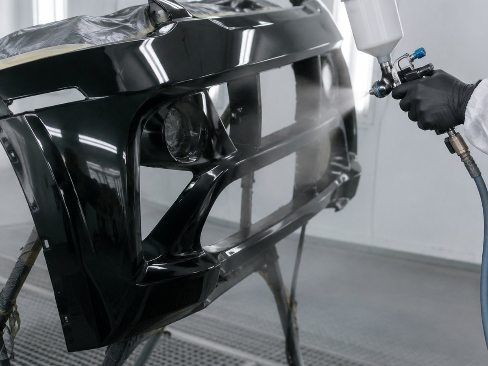
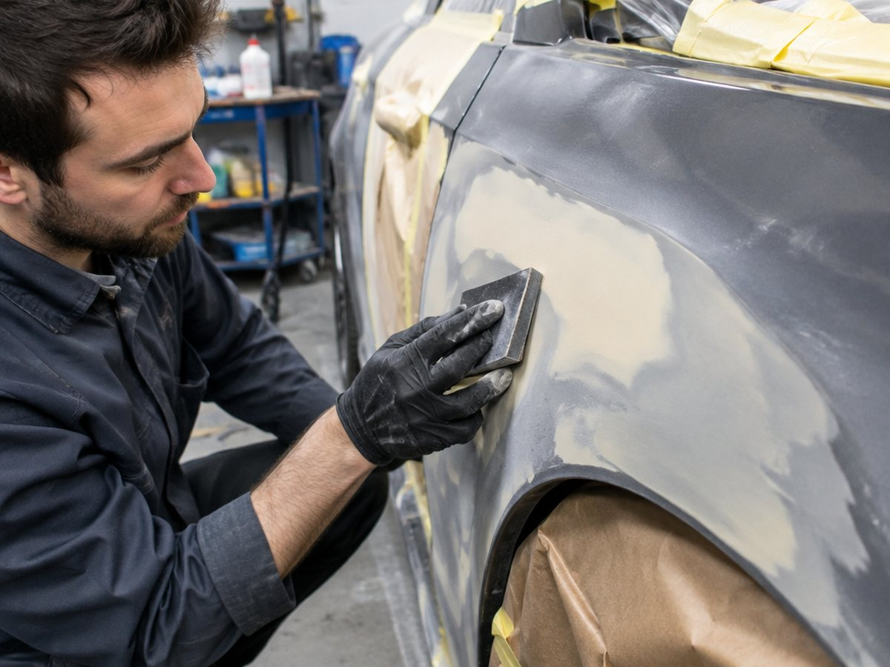

01
Ремонт бампера
Трещины, сколы, потёртости и следы парковки: восстановление пластика, затем подготовка и покраска.

Ремонт бампера, подготовка к покраске и окрас снятых элементов: бампер, крыло, капот, дверь, крышка багажника. Красим деталь отдельно от машины, поэтому переход не видно.



Работаем с отдельными элементами: не нужно красить полмашины, чтобы убрать один скол или восстановить бампер после парковки.
Трещины, сколы, потёртости и следы парковки: восстановление пластика, затем подготовка и покраска.
Крылья, капот, двери, крышка багажника и другие детали — окрас снятого элемента.
Шлифовка, шпатлёвка, грунт и маскировка — от этого зависит, как ляжет краска.
Деталь красится отдельно от автомобиля — удобно, когда машина нужна каждый день.
Цвет подбирается по кузову, чтобы деталь не выделялась на солнце и под фонарями.
Цена зависит от элемента и состояния. Скажу по телефону или после осмотра детали.
+375 (29) 658-08-18Список элементов, с которыми работаем постоянно. Нужного нет — позвоните, уточним.
Смотрим элемент, оцениваем повреждения и состояние покрытия. Называем стоимость.
Восстанавливаем пластик или металл, шлифуем, шпатлюем, грунтуем.
Подбираем цвет и наносим покрытие на снятый элемент.
Проверяем результат вместе с вами: цвет, глянец, кромки.
Оставьте номер и какие элементы нужно покрасить — назову стоимость и свободный день. Заявка откроется в WhatsApp с готовым текстом.
Зависит от состояния бампера: нужен ли ремонт пластика и сколько слоёв подготовки. Точную стоимость называем после осмотра элемента, до начала работ.
Нет. Работаем со снятыми элементами: привозите деталь, забираете готовую. Это удобно, если автомобиль нужен каждый день.
Цвет подбирается по кузову автомобиля. Если элемент красится отдельно, это как раз позволяет попасть в оттенок точнее, чем при подкрасе на машине.
Да, восстановление пластика входит в работу. Насколько это возможно в вашем случае — скажем после осмотра.
В Минске. Точный адрес и время подскажем по телефону.
Позвоните: скажите, какие элементы нужно покрасить — назову стоимость и сроки. Работаем по Минску.